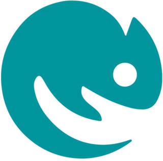

Consultório Veterinário de Loures
Um consultório perto de si, aberto de segunda a sábado. Ao lado fica a ExoticVets, para animais exóticos.
Ao lado, a ExoticVets

Tem um animal exótico? A ExoticVets fica junto a este consultório e trata de todos os animais exóticos, também ao domicílio.
Conhecer a ExoticVetsPedir marcação
Diga-nos o que lhe dá jeito e nós respondemos para confirmar o dia e a hora.
A marcação só fica confirmada quando o consultório lhe responder. Os dados que escreve aqui não ficam guardados no site: servem apenas para preparar a mensagem que envia ao consultório.
Horário: segunda a sábado, 9h30–13h e 15h–19h30; domingo, encerrado.
O seu pedido está pronto
Envie este texto ao consultório ou ligue para confirmar. Só fica marcado quando lhe responderem.
Como nos encontrar
- Morada
- Rua Francisco José Purificação Chaves 2
2670-345 Loures - Telefone
- 218 065 171
- Horário
- Segunda a sábado, 9h30–13h e 15h–19h30
Domingo, encerrado
O consultório faz parte do Grupo do meu melhor amigo, juntamente com o consultório de Pinhal Novo e o Centro Veterinário Linda-a-Velha.